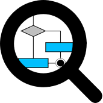
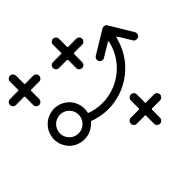
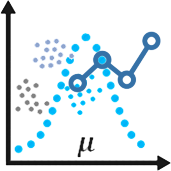

Ingeniero en Sistemas de Información de la Universidad de Sonora, además de uno que otro conocimiento de Ingeniería Industrial y Mercadotecnia.
Nivel V de Ingles en el Departamento de Lenguas Extranjeras.
Mis intereses son de todos, más que nada aquellos que involucren Estadística aplicada, Simulacion, Ciencia de datos e Investigación de operaciones.
Tambien me gusta todo lo que sea diseño y desarrollo de interfaces o vistas. Basicamente lo que viene siendo UX/UI y Front-end.

Análisis de Sistemas

Planeación de proyectos
Desarrollo

Ciencia de Datos
Bases de Datos
Inteligencia Artificial

Redes

Seguridad Informática